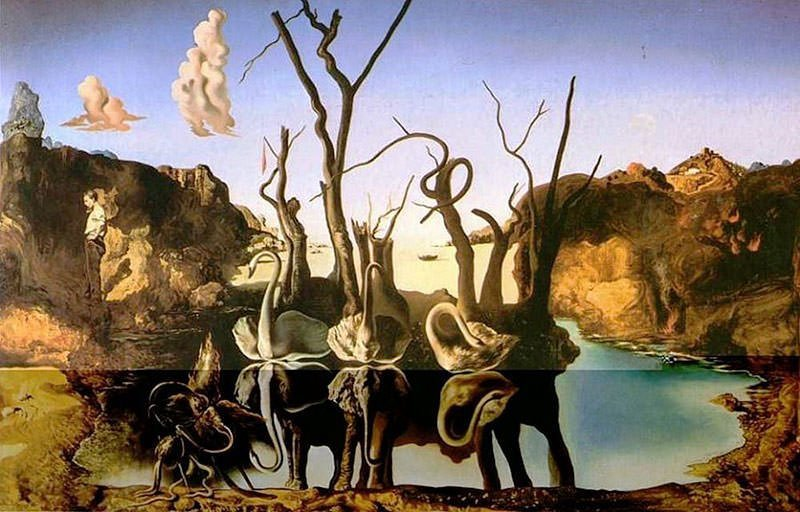

break break break
Famous Works
break break break

- The Persistence of Memory (1931)
- most renowned Surrealist work
- hard vs. soft
- Dali never explained his work
- "camembert of time," permanence, decay
- central creature approx. Dali's profile?
- eyelashes, fly, Catalonia coast

break break break break break break
- Swans Reflecting Elephants (1937)
- double images
- hallucinatory & illusion
- still vs. moving (lake & sky)
- elephants, swans
- human to the left (Dali, James, Duchamp?)
- Catalonia coast, mystery